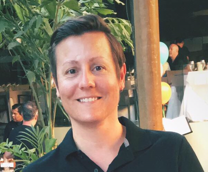

I am a Full Stack Web Developer who has successfully completed
The University of Minnesota Web Development Coding Bootcamp. I love a variety of novel challenges
and love to solve problems and get things done so I decided to create my own website in addition to
showing you my portfolio. I'm a driven individual who is currently enrolled in the Full Stack Web Developer
program at the University of Minnesota. Further experience pursuing a Bachelor of Science (B.S.) in Computer Science
from Oregon State University. I am actively seeking a Junior Web Development, Front-End, Back-End or
Full Stack Web Developer role in the Minneapolis area. Open to working remotely. Currently creating in HTML5,
CSS3, and JavaScript.
Welcome to the official website of Melanie Cisler, Full Stack
Web Developer. My goal is to help you engineer the most outstanding website for you
and your business.
I love to solve problems. Whether it's finding the most elegant
way to write a line of code or figuring out the most efficient way a businesses site
can be utilized, I love the challenge of finding a way and discovering solutions.
Wondering if I might be a good fit for your company? Check out my LinkedIn Profile! Contact: 920-242-2185 Email: Melanie.Cisler@yahoo.com